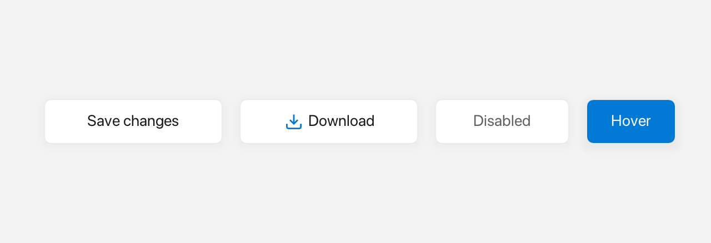

Button
A Button is a clickable label that shows hover and pressed feedback and fires onClick when clicked with the mouse; there is no keyboard activation.

Default, icon, disabled and hover states.
What it's for
Use a Button when you need an action the user can trigger. It displays text or Inline content (icons + colors) centered inside a rounded rectangle, handles hover and press automatically, and can host a dropdown Menu that opens below the button.
The words you need
- Callback — a small function you give to the button so it can call you back when something happens. In C++ you usually write one as a lambda, like
[] { … }. Inline— rich content that mixes text and icons. The$()shorthand builds it. See Inline and Icons.- bounds — where the button sits and how big it is, given as a
Rect. See Geometry & colors.
In the examples below, win is an open window (see Window).
A first example
auto& btn = win.add<fluffy::Button>("Click me"); // bounds default to Rect{}
btn.setBounds(fluffy::Rect{40, 40, 120, 40});
btn.onClick([] { std::printf("clicked\n"); });
win.add<fluffy::Button>(...) creates the button with its label and returns a reference to it. Its bounds default to Rect{}, so you normally set them with setBounds. The onClick callback runs when the user presses and releases the mouse inside the button.
Common tasks
Change the label
Use setLabel for plain text, or setInline for rich content. setText is another name for setInline, so it takes an Inline too:
btn.setLabel("Saving…");
std::string t = btn.label(); // plain label only; Inline content is write-only
btn.setInline(fluffy::$(fluffy::Icons::door_open << " Quit"));
btn.setText(fluffy::$(fluffy::Icons::check << " Done")); // another name for setInline
Attach a dropdown menu
A button can own a vertical menu that opens below it:
btn.setDropdownMenu(std::move(menu));
fluffy::Menu* m = btn.dropdownMenu();
bool hasMenu = btn.hasDropdownMenu();
When a dropdown menu is attached, clicking opens the menu below the button, and the button's typed onClick callback is not called. There is no YAML key for dropdownMenu; attach it in code. See Menu.
Enable, disable, and inspect state
btn.setEnabled(false);
bool hov = btn.isHovered(), pressed = btn.isPressed(), foc = btn.isFocused();
Setting enabled to false greys out the button and makes it ignore input.
Bind a click handler
There are two ways to set the same handler:
btn.onClick([] { std::printf("clicked\n"); }); // preferred
btn.setOnClick([&win] { win.requestClose(); }); // same setter, no chaining
onClick is the fluent alternative to setOnClick.
Load a button from YAML
Button:
text: "Click me"
x: 40
y: 40
width: 120
height: 40
onClick: "myHandler"
onClick works through the generic setEvent path, so any onXxx key binds a dispatcher handler.
Good to know
- Clicking is mouse-only; there is no keyboard activation.
naturalWidth()andnaturalHeight()measure the label or inline content plusbutton_padding_x/y.
Quick reference
Properties
| Property | Type | Description |
|---|---|---|
label |
string |
Plain button text. |
inline |
Inline |
Rich label (Icons::*, Color, Style). Replaces label. |
enabled |
bool |
false greys out and ignores input. |
dropdownMenu |
unique_ptr<Menu> |
Optional vertical menu opened on click. |
Plus Widget properties: bounds, visible, font, textSize, autoSize, etc.
Methods
auto& btn = win.add<fluffy::Button>("Click me"); // bounds default to Rect{}
btn.setBounds(fluffy::Rect{40, 40, 120, 40});
btn.setLabel("Saving…");
std::string t = btn.label(); // plain label only; Inline content is write-only
btn.setInline(fluffy::$(fluffy::Icons::door_open << " Quit"));
btn.setText(fluffy::$(fluffy::Icons::check << " Done")); // another name for setInline
btn.setDropdownMenu(std::move(menu));
fluffy::Menu* m = btn.dropdownMenu();
bool hasMenu = btn.hasDropdownMenu();
btn.setEnabled(false);
bool hov = btn.isHovered(), pressed = btn.isPressed(), foc = btn.isFocused();
btn.onClick([] { /* ... */ }); // fluent alternative to setOnClick
Events
| Event | Signature | When |
|---|---|---|
onClick |
void() |
Mouse click (press + release inside). |
btn.onClick([] { std::printf("clicked\n"); }); // preferred
btn.setOnClick([&win] { win.requestClose(); }); // same setter, no chaining